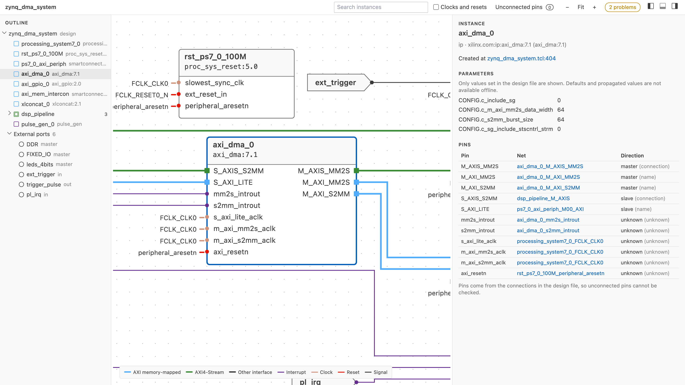
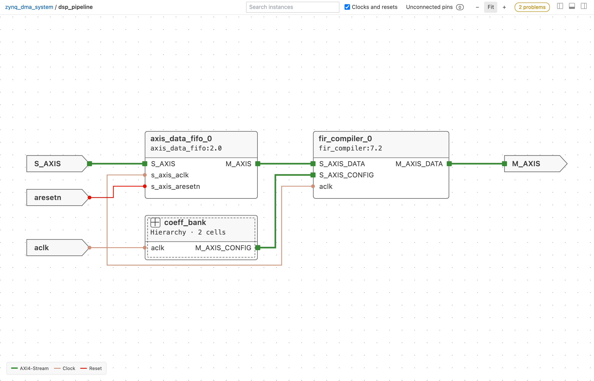
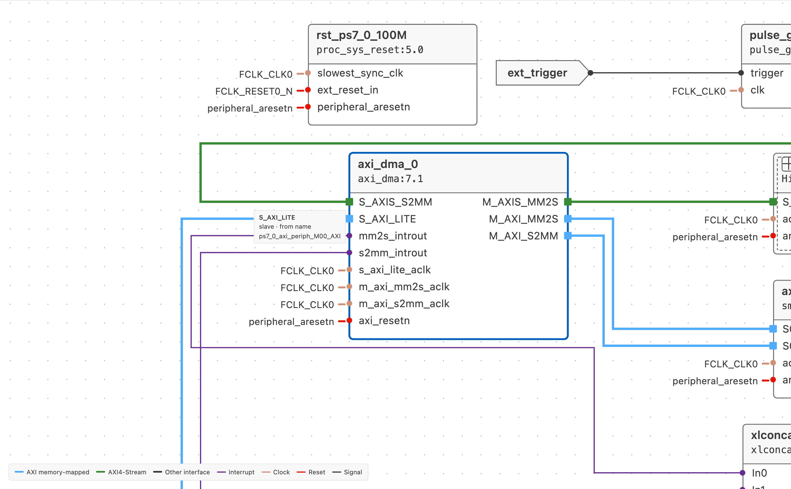
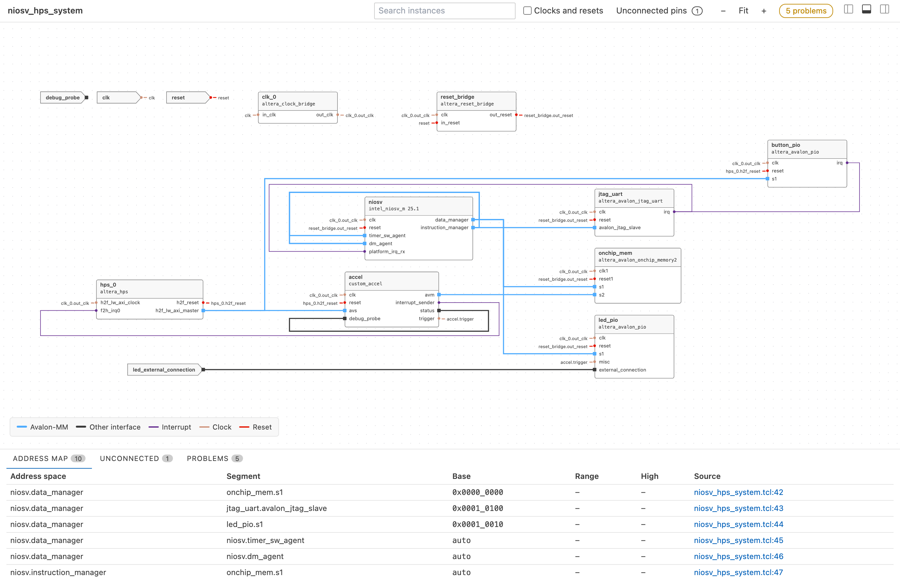

Viewing a System Design¶
IPCraft can show a Vivado block design or a Platform Designer system as a diagram. The view is read-only and works offline. It needs no vendor tool and no license, and it never runs your script.

Supported files¶
| File | Source |
|---|---|
.tcl |
Vivado block design script written by write_bd_tcl |
.qsys |
Platform Designer system (Standard) |
.tcl |
Platform Designer system script for qsys-script |
IPCraft recognizes a .tcl file by its commands. A _hw.tcl file is a
component description, not a system. It keeps its own preview.
Files are read as text. The Tcl is never executed, so values that a script computes are not available. See What the offline view cannot show.
Open the diagram¶
- Open the
.tclor.qsysfile in the text editor. - Press
Ctrl+Shift+V(Cmd+Shift+Von macOS), or run IPCraft: Open as System Diagram. - Press the same keys again to return to the text editor.
The diagram updates as you edit the file. If an edit breaks the file, the diagram keeps the last valid design and shows a banner with the reason.
Navigate¶
The diagram shows one hierarchy level at a time.
- Levels. Double-click a hierarchy block to enter it. Use the breadcrumb at the top left, or the mouse back button, to go up one level.
- Expand in place. Click the + button in the header of a hierarchy block, or right-click it and choose Expand In-Place, to see inside without leaving the level. The block becomes a frame with its pins on the border: wires from outside meet the pins from outside, and the wires inside meet them from inside. Click - in the frame header, or right-click and choose Collapse, to fold it again. Open Subsystem in the same menu enters the block like a double-click. Hierarchy blocks inside a frame can be expanded too, and expanded blocks stay expanded when you go to another level and back. Isolate works on the blocks of the level on show, not on those inside a frame.
- Outline. Lists the instances of the current design and its external ports. Select an item to select it in the diagram and center it.
- Search. Type in Search instances to dim the blocks whose name or type does not match. Press Enter or Shift+Enter to go to the next or previous match on any level; a counter shows the position, and Escape clears the search.
- Details. Shows the selected block, net, or port: type, where it is defined in the file, the parameters set in the file, and its pins with their nets. Select a line link to open the file at that line.
- Address map. Lists the address segments found in the design. Select a row to select its instance.
- Clocks. Lists the clock domains with their frequencies and the clock domain crossings. See Clock and reset domains.
- Resets. Lists the reset sources and the reset domain crossings.

Isolate blocks¶
To focus on a few blocks of a busy level, select them and isolate them.
- Click a block or port, then Cmd+Click (macOS) or Ctrl+Click (Windows and Linux) to add more, or to remove one that is already selected. Details shows "N selected" with a list of the names; clicking a name selects that block alone.
- Right-click one of the selected blocks and choose Isolate N Selected (N is the number of selected blocks). Right-clicking a block that is not selected selects it alone, and the item reads Isolate Selection.
The diagram then shows the selected blocks, the wires that touch them, and the block or port at the other end of each of those wires, laid out compactly. Wires between two of the other blocks stay hidden. Clock and reset wires count only while Clocks and resets is on. A toolbar chip reads "Isolated · N selected · M shown", where M counts every block and port on screen.
Choose Show All from the right-click menu (on a block or on the empty canvas) or the toolbar to return to the full level, with the zoom and pan it had before. Isolation also ends when you go to another level (breadcrumb, opening a hierarchy block, the mouse back button, or an outline or search jump) or when a search step or outline row selects a block that the isolated view hides.
Find unconnected pins¶
To review the pins that nothing connects to, turn on Unconnected pins in the toolbar. The button shows the number of unconnected pins in the whole design, in the warning color when any is undriven. Turning it on also opens the Unconnected tab of the bottom panel; turning it off leaves the tab as it is.
A pin is unconnected when no net touches it on its level. There are two kinds:
- Undriven: an input (or a slave interface) that nothing drives. The vendor tool ties such an input to a constant, usually its default value, so an active-low reset tied to 0 holds the block in reset. Undriven pins are drawn in the warning color.
- Unused: an output, master interface, or bidirectional pin that nothing uses. This is often intentional, so unused pins are drawn muted.
While the review is on, the diagram dims wires and blocks without findings. Each unconnected pin gets a short dashed stub ending in a hollow circle, a block header shows a warning icon (a disconnect icon when nothing is undriven) with the count, and hovering it gives the undriven and unused split (hierarchy blocks count the pins inside them too). The outline shows a count on each block and external port.
Only blocks whose full pin list is known can be checked: blocks with an .ip.yml or HDL definition, hierarchy blocks and their pins, and external ports. For the other blocks (drawn with a dashed border), the viewer knows only the pins that appear in connections, so it cannot tell which pins are open. They are listed as not checked.
The Unconnected tab lists every finding with its pin, block, level, direction, type, where the pin is known from, and a link to the line that created it. The Undriven and Unused chips filter the rows. Click a row to go to its level, select the block, centre it (zooming in if it is too small to read), and mark the pin on the diagram and in Details. A hierarchy pin that is open on both sides is listed twice: once on the hierarchy block in the parent level and once as the port inside. Details shows undriven or unused in the Net column of every unconnected pin, with or without the review on.
Panels¶
The outline, details, and bottom panels start hidden so the diagram has the full width. Use the three buttons at the top right to show or hide them. Drag the edge of a panel to resize it. For the arrow-key resize and the double-click that collapses a panel, see Keyboard Shortcuts.
Clocks and resets¶
Clock and reset nets are hidden by default. Each pin that is on one shows a
small badge with the net name, or the first name and +N when the pin is on
several nets. This keeps data paths readable.
Turn on Clocks and resets in the toolbar to draw those nets.
Clock and reset domains¶
To see which clock each part of the design runs on, and where a signal passes
from one clock to another, turn on Clock domains in the toolbar. The button
shows the number of flagged crossings (2 CDC · 2 RDC, in the warning color), or
the number of clock domains when none is flagged. Turning it on opens the
Clocks tab and draws clocks and resets, so the Clocks and resets
checkbox is disabled while it is on. It also turns the Unconnected pins
review off, and turning that review on turns this mode off.
A clock domain is a clock source and every pin its nets reach, followed through hierarchy pins and, in Platform Designer, through clock source blocks. What matters is which pins share one clock; the frequency is extra information.
The source of a clock¶
Vivado's exported script does not list the driver of a net first, so IPCraft
does not take the first pin of a net as its source. The source is the one pin
that a rule names as a clock output (for example FCLK_CLK<n> of a Zynq PS,
clk_out<n> of a clocking wizard, pl<n>_ref_clk of Versal CIPS) or whose
direction the design or an .ip.yml states, such as an input port of the
design. When there is none or more than one, the source is not known: the
domain is still there, named after the first net of the clock, and Details says
"Source not known". A reset source is found the same way, from the rules for
reset outputs. The output of an xlconstant is a constant that never toggles,
so the sinks of a reset tied to it are OK ("Tied to a constant"). The
outputs of util_vector_logic, util_reduced_logic and axi_gpio
(gpio_io_o, gpio2_io_o) are known to drive a reset, but no rule says which
clock releases it, so its sinks are Not checked. A reset net without a known
source is still a reset source, named after its first net, with every pin on it
as a sink; an asynchronous input still passes, and every other sink is Not
checked.
Status outputs of clocking blocks, such as locked of a clocking wizard or
dcm_locked of a proc_sys_reset, are not clocks even when their net is named
like one. They belong to no domain and are drawn as ordinary nets.
Frequencies¶
A frequency is shown only when the design file sets it, never from a vendor default, and the word "unknown" is never printed for it: a domain without a frequency shows its name alone, and Details says "Frequency not set in the script." It is the requested value: Vivado can round the output of a processing system or a clocking wizard during validation, and the achieved frequency is not available offline.
| Clock source | Value read |
|---|---|
Zynq-7000 processing_system7, pin FCLK_CLK<n> |
CONFIG.PCW_FPGA<n>_PERIPHERAL_FREQMHZ |
Zynq UltraScale+ zynq_ultra_ps_e, pin pl_clk<n> |
CONFIG.PSU__CRL_APB__PL<n>_REF_CTRL__FREQMHZ |
Clocking Wizard clk_wiz, pin clk_out<n> |
CONFIG.CLKOUT<n>_REQUESTED_OUT_FREQ |
Platform Designer clock_source |
clockFrequency |
| External port or hierarchy pin | CONFIG.FREQ_HZ, or the -freq_hz flag of create_bd_port / create_bd_pin that Vivado writes in exported scripts |
When the parameter is not set, or the source has no rule, no frequency is shown.
An .ip.yml clock can declare the frequency it expects (frequency); Details
then checks it against the domain it sits on.
On the diagram¶
- Clock wires and the markers of clock pins take the color of their domain, and each clock pin of a domain with a frequency shows it next to the wire.
- Reset wires are dotted and take the color of the domain that releases them; an asynchronous reset, or one whose release clock is unknown, is muted.
- Other wires are dimmed.
- A crossing is drawn dashed in the warning color, and the names of the pins at its ends turn to the warning color: both ends of a clock domain crossing, only the sink pin of a reset domain crossing.
- A block header has a thin strip with one segment per clock domain of the block
and a badge:
N CDC · M RDCwhen crossings are on its pins (inside a hierarchy block, anywhere inside it), orN DOMAINSwhen it spans several domains. - The legend lists the domains of the level, and the outline shows a dot per domain on each block and the number of crossings inside each hierarchy block. Connections between related clocks are not counted or drawn as crossings.
Select a clock or reset net¶
Selecting a clock or reset net, with the mode on or off, selects its whole tree on every level: the wires and pins of the tree are highlighted, the blocks and ports it does not touch are dimmed, and the clock pins of a clock tree show the frequency. Details shows the tree:
- a clock tree with the frequency and the parameter it was requested by and
where (or "Frequency not set in the script."), the tree from the source
through every level with a check against the
.ip.ymlexpectation where there is one, the resets released on that domain, the crossings with other domains, and the blocks that have clocks on another domain too; - a reset tree with who releases the reset, a check per sink (
✓released on its own clock,✗clocked by another domain,?clock unknown,✓asynchronous input), and the reset domain crossings.
Selecting a block shows its clock pins with their domains, and for a block with a known pin list the clock of each interface and the release of each reset. A clock or reset port shows its domain.
Crossings¶
IPCraft checks memory-mapped and streaming connections (AXI, Avalon) and resets, followed through hierarchies.
- A clock domain crossing (CDC) is a connection whose two ends are clocked by different domains. No synchronizer is known between them: IPCraft does not look inside blocks.
- A reset domain crossing (RDC) is a reset sink that is clocked by a domain
other than the one that releases the reset, or a reset that is asynchronous
(the Zynq PS resets) feeding a sink that does not accept an asynchronous reset.
A
proc_sys_resetaccepts one onext_reset_inandaux_reset_in. - A connection between related clocks is neither flagged nor unchecked. The
outputs of one clocking wizard (
clk_wiz,clk_wizard) are related, and so is the clock that feeds its input (clk_in1,clk_in2, ...): Vivado times the paths between them. Neither the Clocks nor the Resets tab lists it; Details of its net says Related clocks, with the generator in its reason. Processor system clocks are never treated as related. - A block that spans domains (for example an asynchronous FIFO) is not
flagged. Its header badge reads
N DOMAINS, and its Details say "This block uses N clock domains" with their names. - A crossing is not checked when the clock of one end is unknown, when both clocks enter the design through ports, or when the source of one clock is not known. Two clocks that enter through ports may be one clock: the top level that uses the design decides. A port clock against a clock made inside the design (a PS clock, a clocking wizard output) is still a crossing.
The clock of an interface or reset pin is never guessed from its name. It comes
from the associatedClock of its .ip.yml, from the only clock of its block,
or from all clocks of its block being on one domain. For an external port it
comes from the CONFIG.ASSOCIATED_BUSIF and CONFIG.ASSOCIATED_RESET
parameters of a clock port. Otherwise the pin is not checked; the Clocks tab
and Details say why.
Platform Designer inserts clock-crossing adapters and reset synchronizers when it generates the system, so its crossings are OK, "Handled by Platform Designer", and neither tab lists any. The domains and frequencies are shown as for any other system.
The Clocks and Resets tabs¶
The Clocks and Resets tabs list what the level on screen shows: the current level plus the hierarchy blocks expanded in place on it. Entering a block, going back, or expanding or collapsing a block changes their rows and the counts on the tabs (the clock domains and the reset sources in view). The Clock domains button in the toolbar keeps counting the whole design, and turning it on opens the Clocks tab. Each tab has a table of sources and a table of crossings.
Clocks
- Clock domains: the domains with a pin, the source or a load, on a level in
view, with the frequency (empty when the design does not set it), the source
pin ("not known" when no rule or direction names it), the parameter the
frequency was read from (
scriptfor an IP parameter,declaredfor a port or hierarchy pin), the number of loads and levels, and a link to the source line. Click a row to select the clock net of the domain, centre the block of its source pin (zooming in when it is too small to read), and mark that pin. - Clock domain crossings: one line says how many data crossings in view have
no synchronizer ("No clock domain crossings on this level." when there are
none). A crossing is in view when either end is on a level in view: a crossing
from inside a collapsed block to a block on the level is listed, one entirely
inside a collapsed block is not (the header badge of that block counts it).
The table lists those crossings, each with a
!icon, the kind (the interface type), the pin at each end, the problem in plain words ("200 MHz to 100 MHz, no synchronizer"; domain names stand in for frequencies the script does not set or sets alike), and a link to the source line. Hover a row to see how the clock of each end was determined. Tick Show N that could not be checked to add the connections whose clocks are not known (?), with the reason as the problem. Click a row to select its net, centre the sink's block and mark the sink pin; it zooms in when the block is too small to read.
Resets
- Reset sources: each reset source with its source or a sink on a level in view, and the number of sinks. Click a row to select the reset net, centre the block of its source pin (zooming in when it is too small to read), and mark that pin. Details shows which clock releases the reset, when that is known.
- Reset domain crossings: one line says how many resets in view are released on another clock domain or asynchronously ("2 reset crossings without a synchronizer.", or "No reset domain crossings on this level."), scoped as above. The table has no Kind column, since every row is a reset: the icon, the reset source and the sink pin, the problem ("released by clk_a, clocked by clk_b", or "asynchronous reset, clocked by clk_b"), and a link to the source line. It has its own Show N that could not be checked checkbox, its rows show how each clock was determined on hover, and a click selects the net as in the Clocks tab.
Related clocks, blocks that span domains and connections that are fine are not listed in either tab.
Zoom¶
- Scroll or use + and - to zoom, and drag the canvas to pan.
- Fit fits the whole level.
- Double-click a block (other than a hierarchy block) or a port to zoom to it.
- Double-click empty canvas to fit the level.
- Each level remembers its own zoom and position while the diagram is open.
Names and hover¶
Blocks are sized to their names and pins. A pin or port name that is still too long is shortened with an ellipsis in the middle.
Hover a pin to see its full name, its direction, its interface or signal type
when known, the nets it is on, and whether it comes from an .ip.yml or HDL
definition.

IP definitions from your workspace¶
A design file lists the IP it uses, but often not every pin. IPCraft looks for matching definitions in your workspace and adds what it finds:
- an
.ip.ymlfile, matched by its VLNV (Vivado) or by its Platform Designer component name; - a VHDL or Verilog file, matched by entity or module name, for Vivado module references.
A match adds pins that the design leaves unconnected, pin directions, and interface types. The details panel then shows a Defined by link that opens the definition. When several files match, a Platform Designer component first prefers the file with the same version; otherwise the file nearest to the design file wins. Large HDL files and generated or dependency folders are skipped. A match that cannot be decided is not used.
In an untrusted workspace, IPCraft reads no definitions. Trust the workspace to turn them on.
Vivado scripts do not record pin directions, so IPCraft knows the outputs of
common AMD IPs and draws them on the right of the block: the clocking wizards
(clk_wiz, clk_wizard), proc_sys_reset, the PS clocks and resets of
Zynq-7000, Zynq UltraScale+ and Versal, xlconstant, util_vector_logic,
util_reduced_logic and axi_gpio. An IP definition, when present, decides
instead.
Platform Designer scripts¶
A system script does not always say what a connection carries. IPCraft infers the kind from an explicit statement, from parameters, by propagating the kind along connections, and as a last step from names. Connections whose kind came from names are a best guess; Details shows how the kind of a net was found. A script that uses Tcl that cannot be evaluated marks the view partial.
A module whose kind is the base name of another .qsys file in the workspace
(for example kind="sub_system" and sub_system.qsys) is a Platform Designer
subsystem. IPCraft reads that file and shows the module as a hierarchy level:
double-click the block to enter it, or expand it in place with its + button. Go to source from inside the subsystem opens
the subsystem file. Subsystems that instantiate each other, or a file that cannot
be read, stay opaque blocks.

What the offline view cannot show¶
- Default and propagated parameters. Only values set in the file appear.
- The frequency a clock achieves after validation, and clocks a block derives itself. Only the requested frequency of the sources listed under Frequencies is known.
- Unconnected pins of an instance that has no definition in the workspace.
- Address ranges in Platform Designer systems, both
.qsysfiles and system scripts. Base addresses are shown, and ranges that come from the IP definitions are not filled in yet. - Anything that needs Tcl to be evaluated, such as loops and computed names. The view is marked partial in Details, under What this view knows.
For the design behind this feature, see Offline System Viewer.